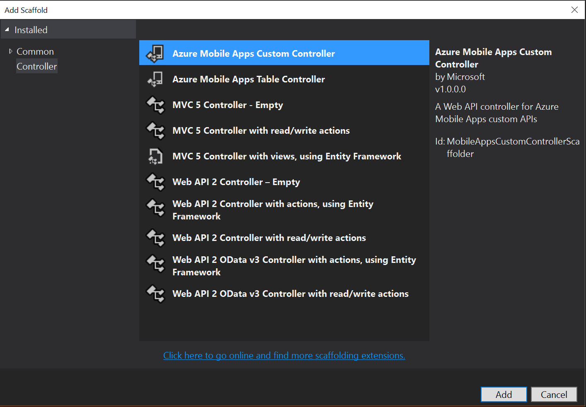
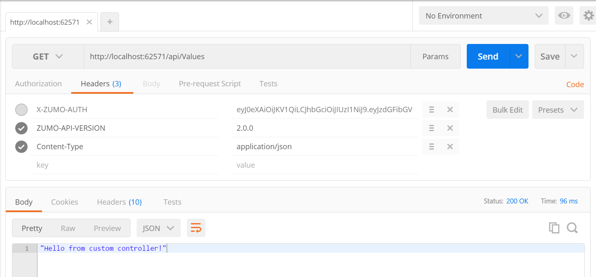
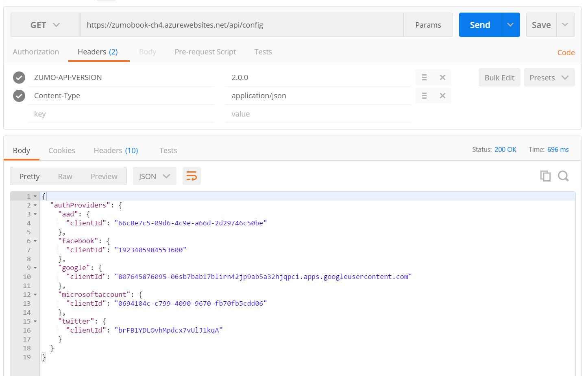

Custom HTTP Endpoints¶
Azure Mobile Apps makes it really easy to develop basic APIs that can be used in mobile clients. Most custom APIs can be simply invoked. Azure Mobile Apps takes care of most of the scaffolding for you. The server SDK will:
- Ensure the
ZUMO-API-VERSIONis present and valid. - Handle serialization and deserialization of JSON.
- Ensure the API is given an appropriate URL.
All the custom APIs will appear under the /api endpoint. For example, if you created a controller
called FooController, it would be invoked by sending messages to /api/Foo. This is case-insensitive,
so you could also reference this API as /api/foo.
Configuring Custom APIs¶
Before anything happens, you must add the MapApiControllers() method to the MobileAppConfiguration()
call. This is done in the ConfigureMobileApp() method in App_Start\Startup.MobileApp.cs file:
new MobileAppConfiguration()
.AddTablesWithEntityFramework() /* /tables endpoints */
.MapApiControllers() /* /api endpoints */
.ApplyTo(config);
The MapApiControllers() extension method does the actual work of looking for custom APIs and mapping them
onto the /api endpoint.
Creating a Basic Custom API¶
You might remember that the original Azure Mobile Apps project within Visual Studio comes with a sample
custom API called the ValuesController. This controller did not do anything useful. Let's re-create
it from scratch.
- Right-click the
Controllersnode in your backend project and use Add -> Controller....

- Select the Azure Mobile Apps Custom Controller, then click Add.
- Enter the name for the controller, for example, ValuesController. Click Add.
The new controller will be scaffolded for you. When you are done, it looks like this:
using System.Web.Http;
using Microsoft.Azure.Mobile.Server.Config;
namespace Backend.Controllers
{
[MobileAppController]
public class ValuesController : ApiController
{
// GET api/Default
public string Get()
{
return "Hello from custom controller!";
}
}
}
If you have not done anything that requires a backend, then you can press F5 to run the backend and use Postman to interact with your new custom API:

We still have to submit the ZUMO-API-VERSION header for this to work. Whatever my method returns will
be returned as JSON. This one is not exactly exciting. One of the things I do quite often is provide
a configuration endpoint called /api/config which returns a JSON object that I can use to configure the
mobile client.
using System.Web.Http;
using Microsoft.Azure.Mobile.Server.Config;
using System.Collections.Generic;
using System;
namespace Backend.Controllers
{
[MobileAppController]
public class ConfigController : ApiController
{
private ConfigViewModel configuration;
public ConfigController()
{
Dictionary<string, ProviderInformation> providers = new Dictionary<string, ProviderInformation>();
AddToProviders(providers, "aad", "MOBILE_AAD_CLIENT_ID");
AddToProviders(providers, "facebook", "MOBILE_FB_CLIENT_ID");
AddToProviders(providers, "google", "MOBILE_GOOGLE_CLIENT_ID");
AddToProviders(providers, "microsoftaccount", "MOBILE_MSA_CLIENT_ID");
AddToProviders(providers, "twitter", "MOBILE_TWITTER_CLIENT_ID");
configuration = new ConfigViewModel
{
AuthProviders = providers
};
}
private void AddToProviders(Dictionary<string, ProviderInformation> providers, string provider, string envVar)
{
string envVal = Environment.GetEnvironmentVariable(envVar);
if (envVal != null && envVal?.Length > 0)
{
providers.Add(provider, new ProviderInformation { ClientId = envVal });
}
}
[HttpGet]
public ConfigViewModel Get()
{
return configuration;
}
}
public class ProviderInformation
{
public string ClientId { get; set; }
}
public class ConfigViewModel
{
public Dictionary<string, ProviderInformation> AuthProviders { get; set; }
}
}
The constructor produces a ConfigViewModel for me. This describes the configuration object I want to send. In
this case, I want to send the client ID for each authentication provider. If the authentication provider is not
configured, then the client ID is not sent. I use the application settings to determine what is configured. The
primary idea behind this is to integrate all the client flows within my mobile client. When the user wishes to
log in, they are presented with a menu of options and can pick which social provider they wish to use. The
client-flow authentication libraries may use different client IDs than the ones that are configured into the authentication
service. For example, AAD uses two client IDs - one for server-flow and one for client-flow. As a result, this
controller uses Application Settings (which appear as environment variables to the backend) to set the
client IDs. The result of calling this API from Postman looks like this:

Warn
Only expose information that you would normally and reasonably embed in a mobile client. Never transmit secrets this way. It is insecure and can put your entire authentication system at risk of hijack.
You can read this information using the Azure Mobile Apps Client SDK once you have a client reference, using the same model classes:
var configuration = await client.InvokeAsync<ConfigViewModel>("config", HttpMethod.Get, null);
You must specify a class that deserializes the JSON that is produced by your API. If you use the same classes, that is practically guaranteed. The other methods in call are the HTTP Method (GET, POST, PATCH, DELETE, etc.) and the query parameters.
Handling Parameters to a Custom API¶
The /api/config endpoint didn't require any information that is extra. Sometimes, we need to provide
extra information so that the right thing can be produced. For example, consider the case of uploading
or downloading a file to Azure Storage. We may want to provide some extra information - the filename of
the file we want to upload and the permissions for the file. Uploading and downloading files is discussed
more fully later in the book and offers a fuller example of this concept.
To illustrate the concept clearly, let's create an API that adds two numbers together. We would call
this API through HTTP like this: GET /api/addition?first=1&second=2. The first number gets added to
the second number and we will return the result. If the first or the second number doesn't exist, we
want to produce a 400 Bad Request response rather than crashing the server. Here is the code:
using System.Web.Http;
using Microsoft.Azure.Mobile.Server.Config;
using System.Net;
namespace Backend.Controllers
{
[MobileAppController]
public class AdditionController : ApiController
{
// GET api/Addition
public ResultViewModel Get(int? first, int? second)
{
if (first == null || second == null)
{
throw new HttpResponseException(HttpStatusCode.BadRequest);
}
ResultViewModel results = new ResultViewModel
{
First = first.GetValueOrDefault(),
Second = second.GetValueOrDefault()
};
results.Result = results.First + results.Second;
return results;
}
}
public class ResultViewModel
{
public int First { get; set; }
public int Second { get; set; }
public int Result { get; set; }
}
}
If you try this out, you will notice something rather odd. Try doing the following URL: /api/addition?first=1&second=2.
You will note it works as expected. However, if you try doing the following URL: /api/addition?first=1, then you
will note that you get a 404 Not Found. This makes the API easy to write because you don't have to worry about
your code receiving bad input (most of the time). However, you may not get the API surface that you want. In this
case, I want to return a 400 Bad Request instead of the normal 404 response. I have to do a lot more work to
support this case:
public class AdditionController : ApiController
{
// GET api/Addition
public ResultViewModel Get()
{
int? first = GetParameter(Request, "first"),
second = GetParameter(Request, "second");
ResultViewModel results = new ResultViewModel
{
First = first.GetValueOrDefault(),
Second = second.GetValueOrDefault()
};
results.Result = results.First + results.Second;
return results;
}
private int? GetParameter(HttpRequestMessage request, string name)
{
var queryParams = request.GetQueryNameValuePairs().Where(kv => kv.Key == name).ToList();
if (queryParams.Count == 0)
{
throw new HttpResponseException(HttpStatusCode.BadRequest);
}
int rv;
if (!Int32.TryParse(queryParams[0].Value, out rv))
{
throw new HttpResponseException(HttpStatusCode.BadRequest);
}
return rv;
}
}
When our Get() routine does not take parameters, no particular pattern is required. We can use the Request
object to access the parameters we send. In this case, the GetParameter() routine checks to see if there
is a named parameter and converts it to an integer. If the named parameter is not there or it is not numeric,
then a Bad Request response is sent.
Handling POST Requests¶
GET and DELETE requests take parameters on the URI. These can be dealt with via the automatic conversion to method parameters or they can be handled via LINQ queries on the request object, as we observed in the prior section. POST requests, by contrast, allow you to submit a JSON body for processing. This is useful when we want to submit multiple JSON objects for processing. For example, one of the common requirements we have is for transactions. When we want to submit two objects that are joined by a foreign key, we can submit them both and construct a transaction in the backend with Entity Framework.
Let's take an example. We want to produce a music trakcing mobile app. When we add an album to our music database, we also want to add the tracks for that database. This can be modeled with code first Entity Framework:
public class Track : EntityData
{
public Track() {}
public string Title { get; set; }
public int Length { get; set; }
public virtual Album Album { get; set; }
}
public class Album : EntityData
{
public Album()
{
Tracks = new List<Track>();
}
public string Title { get; set; }
public virtual ICollection<Track> Tracks { get; set; }
}
This will generate a foreign key relationship in the tables of our database. However, as we learned in chapter 3, relationships are hard to implement and come with some serious caveats. We could decouple the tracks from the albums, but let's instead try to insert the data for an album all in one go. We do this by submitting the JSON for an Album to a custom controller:
[MobileAppController]
public class AlbumCustomController : ApiController
{
MobileServiceContext context;
public AlbumCustomController() : base()
{
context = new MobileServiceContext();
}
[HttpPost]
public async Task<AlbumCustomResponse> PostAsync([FromBody] Album newAlbum)
{
// Use a transaction to update the database
using (DbContextTransaction transaction = context.Database.BeginTransaction())
{
try
{
context.Albums.Add(newAlbum);
await context.SaveChangesAsync();
transaction.Commit();
}
catch (Exception ex)
{
transaction.Rollback();
}
}
// Now generate whatever output we want.
AlbumCustomResponse response = new AlbumCustomResponse
{
Status = 200
};
return response;
}
}
In this particular scenario, we would construct an album object on the mobile client side that directly corresponded to the JSON we want to push to the database, including the track information. Let's take a look at a typical call:
var response = client.InvokeApiAsync<Album,AlbumCustomResponse>(
"AlbumController", // The name of the API
newAlbum, // The body of the POST
HttpMethod.Post, // The HTTP Method
null, // Request Headers
null); // Parameters
There are quite a few signatures for the InvokeApiAsync<>() method. This one sends an Album object as JSON as the
body of the request, and returns an AlbumCustomResponse, decoding the response as it goes.
The Downside of Custom APIs¶
Given that we can do transaction processing within a custom API, one might be forgiven for wondering why we don't use custom APIs for processing data within our normalized SQL schema. The problem, of course, is that custom APIs (including WebAPIs) can only be executed while connected to the Internet. When the mobile device is offline, the custom API cannot be executed, thus breaking our offline model. Offline just doesn't mix with SQL relationships.
When I first encountered this, I thought a great idea may be to instantiate a queue, much like the Operations Queue that is used within the offline sync process. When I want to queue up a transaction, I insert it into my own operations queue. My early research used a light-weight queuing mechanism (DotNetMQ, for those interested) to implement the queue. Transactions were inserted into the queue at the appropriate time in the client. During the sync process, the transactions were pushed, then the tables were pulled. The problem is that the tables in the offline sync were not maintained until a pull, resulting in "old data". If I updated the data in the offline cache as well, I produced many conflicts and inconsistent data within the offline cache. In the end, I concluded that it was better to loosely couple the tables that were being used (as we discussed in chapter 3).